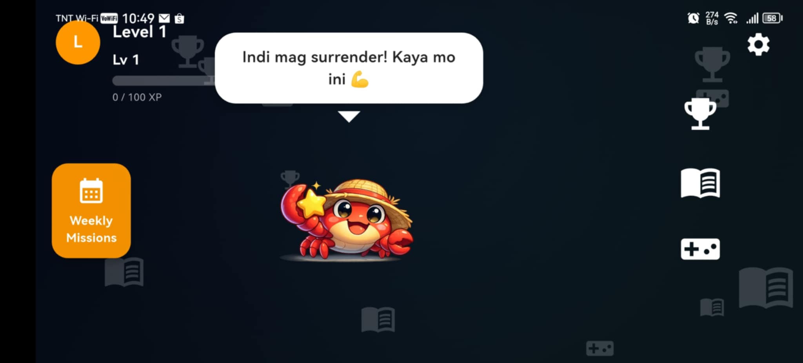
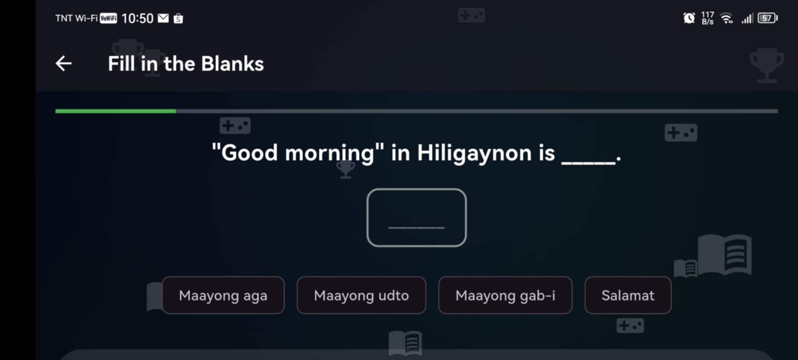

Technical Systems & Development
Mobile Language App
This section highlights systems and applications I developed as part of my academic and personal learning experience.
Mobile Language Learning System

Role: Developer & UI Designer
Technologies: Flutter, Firebase
Features: Authentication, leaderboard, mini-games